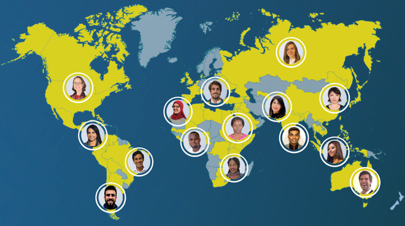

At Atlas Corps, you'll meet young professionals coming from various countries and career backgrounds.
You get to
My best Fellow-buddy was a young woman from Malawi, a country I'd barely heard of before meeting her. She introduced me to Malawian cuisine. Since her host organization was in San Francisco, and I was based in New York City, we only had a chance to hang out during Atlas Corps get-togethers in Washinton, DC. Nevertheless, those were some of the most memorable moments of my fellowship.